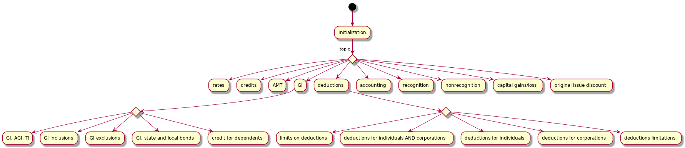
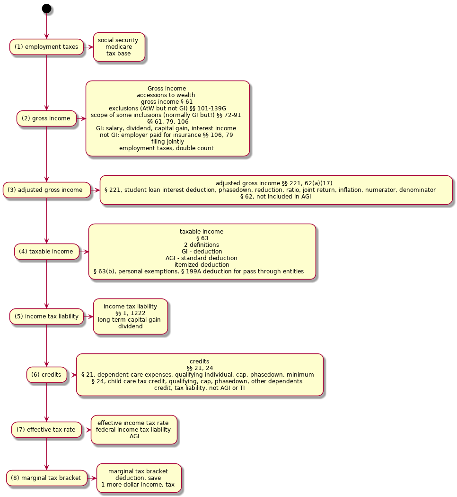
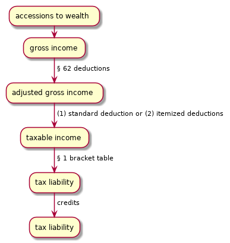

Kratzke
Table of Contents
- 1. TOC
- 2. 1
- 2.1. I. basic concepts
- 2.2. II. taxing income
- 2.3. III. Some definitions
- 2.4. IV. Layout of the code
- 2.5. V. Not all income is taxed alike
- 2.6. VI. Illustration of the tax formula
- 2.7. VII. Sources of tax law and role of courts
- 2.8. VIII. Some income tax policy and some income tax principles
- 2.9. IX. What we tax: what is income?
- 2.10. Wrap up questions
- 2.11. what have you learned?
- 3. Chapter 2: What Is Gross Income: Section 61 and the Sixteenth Amendment
- 4. aside: big picture
- 5. The constitutional and statutory definitions of "gross income": accessions to wealth
1 TOC
- Chapter 1: The Government Raises Money: Introduction to Some Basic Concepts of Taxes and Taxing Income
- I. Introduction to Some Basic Concepts
- II. Taxing Income
- III. Some Definitions
- IV. Layout of the Code
- V. Not All Income Is Taxed Alike
- VI. Illustration of the Tax Formula:
- VII. Sources of Tax Law and the Role of Courts
- VIII. Some Income Tax Policy and Some Income Tax Principles
- IX. What We Tax: What Is Income?
- Wrap-up Questions for Chapter 1
- What have you learned?
- Chapter 2: What Is Gross Income: Section 61 and the Sixteenth Amendment
- I. The Constitutional and Statutory Definitions of “Gross Income”
- II. The Constitutional and Statutory Definitions of “Gross Income:” Accessions to Wealth
- III. The Constitutional and Statutory Definitions of “Gross Income:” Realization
- IV. The Constitutional and Statutory Definitions of “Gross Income:” Dominion and Control
- Wrap-up Questions for Chapter 2:
- What have you learned?
- Chapter 3: Exclusions from Gross Income
- I. The Society and Government that We Want
- II. Social Benefits
- III. Employment-Based Exclusions from Gross Income
- Wrap-up Questions for Chapter 3:
- What have you learned?
- Chapter 4: Loans and Cancellation of Indebtedness
- I. Tax Consequences of Borrowing Money
- II. Cancellation of Indebtedness
- III. Is It a Loan? Is There an Accession to Wealth?
- IV. Section 108(a)'s Other Provisions
- V. Transactions Involving Property Subject to a Loan
- VI. Transactions Treated as Loans
- Wrap-up Questions for Chapter 4
- What have you learned?
- Chapter 5: Progressivity and Assignment of Income
- I. Compensation for Services
- II. Income Splitting and the Joint Return
- III. Income Derived from Property
- IV. Interest Free Loans and Unstated Interest
- Wrap-Up Questions for Chapter 5
- What have you learned?
- Chapter 6: Deductions: Business Expenses
- I. Expense or Capital
- II. Deductibility Under §§ 162 or 212
- III. Depreciation, Amortization, and Cost Recovery
- Wrap-Up Questions for Chapter 6
- What have you learned?
- Chapter 7: Personal Deductions and the Standard Deduction
- I. “Tax Expenditures”
- II. Denial of Discretion in Choosing How or What to Consume
- III. Creating a More Efficient and Productive Economy
- IV. Deferral Until Consumption
- Wrap-Up Questions for Chapter 7
- What have you learned?
- Chapter 8: Tax Consequences of Divorce and Intra-Family Transactions
- I. Introduction
- II. Before Marriage
- III. During Marriage
- IV. After Marriage: Tax Consequences of Divorce
- Wrap-Up Questions for Chapter 8
- What have you learned?
- Chapter 9: Timing of Income and Deductions: Annual Accounting and Accounting Principles
- I. Annual Accounting
- II. Deferral Mechanisms
- III. Basic Accounting Rules
- Wrap-Up Questions for Chapter 9:
- What have you learned?
- Chapter 10: Character of Income and Computation of Tax
- I. Capital Gain
- II. Sections 1245 and 1250: Depreciation Recapture
- III. Section 1231: Some Limited Mismatching
- IV. More Matching
- Wrap-Up Questions for Chapter 10
- What have you learned?
2 1
2.1 I. basic concepts
- tax as "source of revenue" for government
- tariffs
- import tariffs
- export tariffs
- consumers v. producers
- domestic v. foreign
- Article 1, § 9, cl. 5
- no inter-state tariffs
- government monopoly
- government enters an industry, then outlaws competition in that industry
- lotteries, park access, liquor stores
- tax citizens
- citizens v. consumers
- noncitizens, nonresidents
- "tax base"
- what it is the government should tax
- "head tax"
- tax on a specific group - citizen, resident, voter, etc.
- objectively equal ($1000 all citizens), but subjectively unequal ($1000 is nothing to some citizens, is a LOT to other citizens)
- poll tax, 24th Amendment
- consumption tax
- tax "consumption"
- sales tax
- excise tax
- value added tax (VAT)
- sales tax
- tax on sale
- usually a flat %
- NOT on "what people "SAVE""
- more burdensome to those who spend more on [items subject to a sales tax]
- objectively equal (same % for everyone)
- "regressive effect": 2 people; one richer; spend same objective amount; the poorer is taxed on more % of his income; the richer is taxed on less % of his income
- Ramsey principle
- taxes on items whose demand is "inelastic" raises the most revenue
- "inelastic demand": amount of tax does NOT change the demand
- lifesaving drug - doesn't matter how expensive; people MUST buy
- "distort": the mere [presence of tax] changes people's spending behavior
- taxes on inelastic goods distorts LITTLE
- excise tax
- sales tax only on certain class of goods
- basically, head tax but based on [identity/grouping of the item bought] (not based on [identity/grouping of the purchaser])
- tax on luxury items
- luxury goods have highly elastic demand
- excise tax on "sin" purchases like cigarettes and alcohol
- value added tax
- tax on all stages of a sale
- not just on consumer, but every stage of production
- progressive consumption tax
- Schanz-Haig-Simons concept of income
- "wealth"
- "consumption"
- "saving"
- "progressive": more consumption -> more tax
- wealth tax
- estate tax
- tax on estates of decedents
- property tax
- tax on people who HOLD property
- wage tax
- "payroll tax"
- flat % tax on all wages, no matter the actual amount
- social security tax, medicare tax
- regressive effect
- income above "ceiling", effective rate, lower than effective rate of income below ceiling
- Income tax
- "income" as "tax base"
- "deductions"
- adjustments, reductions
- hard to avoid: have to NOT make money
2.2 II. taxing income
- "personal income tax"
- "corporate income tax", "estate tax", "gift tax"
- title 26 of USC is the IRC
2.3 III. Some definitions
- "tax base"
- the thing that the government is taxing
- "all income"
- "taxable income"
- "gross income" minus [§62 deductions], minus (either "standard deduction" or "itemized deductions")
- "tax formula"

- line in the tax formula: "the line"
- "above the line", "below the line"
- gross income to adjusted gross income
- "below the line"
- for you to deduct a "medical expense", you must've spent at least 10% of your AGI (below the line)
- "credit"
- non-refundable credits
- cannot reduce tax liability below 0
- refundable credits
- CAN reduce tax liability below 0 -> govt pays you! lol
- "progressive"
- "declining marginal utility of money"
- $1 is nothing to millionaire, a lot to a poor person
- "equal sacrifice"
- "redistribute income"
- tax brackets
- married, joint
- unmarried
- "progressive tax brackets"
- higher taxable income, higher tax rates
- "regressive tax"
- higher taxable income, less tax rate
- "flat tax"
- one same tax rate, ALL income levels
- "effective tax rate"
- [amount ultimately paid as tax]/[total income]
- "net capital gain" v. "ordinary income"
- "marginal tax rate"
- the rate at which the next/last dollar is taxed
- determines cost/value of working more, get benefit rather than salary, etc.
- "tax incidence"
- who ACTUALLY bears the burden of a tax?
- "direct tax": burden CAN'T be transferred - head tax
- "indirect tax": burden CAN be transferred - excise tax
- landowner charges rent 1. govt imposes real property tax. landowner charges higher rent 2. Ultimately, tenants are paying the real propert ytax
- "upside down nature of deductions and exclusions"
- the value of another dollar earned: $1 - $1*(marginal tax rate)
- the value of next dollar deducted: $1 is received by charity, donor only gives up $1 - $1*(marginal tax rate)
- 1% marginal tax rate: donor gives up 99 cents to give $1 value to charity
- 99% marginal tax rate: donor gives up 1 cent to give $1 value to charity
- "upside-downness" of incentives
- I THINK it just means:
- tax-writers intended "the more you earn, the more you pay"
- but, another way to look at it is:
- "the more you earn, [the more you deduct, the more you benefit]"
- so, richer people go apeshit for deductions
- ultimately, people "earn less", meaning tax revenue is lower
- kind of perverse …?
- fuck taxers
- exclusions from gross income
- "gross income"
- "accessions to wealth"
- things that are "accessions to wealth" but NOT "gross income"
- employer-provided health insurance §106
- life insurance proceeds §101
- interest from state or local bonds §103
- various employee fringe benefits §§132, 129, 119
- encourages people to take these things, since these are not taxed
- "deductions" from "taxable income"
- "deduction"
- if you do X with your money,
- we'll let you pay less taxes by "lowering" your taxable income
- reduces income that's otherwise subject to income tax
- "exclusion from gross income" v. "deduction from taxable income/adjusted gross income"
- Alternative minimum tax
- "AMT"
- you must pay the higher of (1) regular tax and (2) AMT
- you have to pay AT LEAST this amount!
- credits against tax liability
- "credit"
- credits are for things like:
- certain group of people (low income)
- behavior: spend money on childcare
- both
- "right side up" nature of tax credits
- something about: using credits (rather than deductions), benefit poor people more than rich people
- Income phaseouts and deduction caps
- goal: tax poor people less, without taxing rich people less
- "phaseout"
- "cap"
- deduction for interest paid on qualified education loans §219
- cap: $2500
- phaseout:
- you make less than 20k -> can deduct full 2500
- you make 20k-40k -> can deduct 2000
- you make 40k-60k -> can deduct 1500
- you make 60k-80k -> can deduct 1000
- you make 80k-120k -> can deduct 500
- you make 120k+ -> can deduct 0 (can't deduct at all)
- what kind of taxpayer would benefit most from §219? what kind of taxpayer would benefit the least?
- phaseouts and caps exist for both credits and deductions
- A word about "employment taxes"
- "employment taxes"
- tax that everyone pays on wages they get from employers
- social security tax, medicare tax
- self employed, "self-employment taxes"
- eligibility is NOT based on wealth or need
- EVERYONE is to benefit from these programs


2.4 IV. Layout of the code
- Internal Revenue Code
- title 26 of USC
- (1) statutes
- (2) regulations by Department of the Treasury
- "§61" really means "26 USC §61"
- regulation shorthand
- "1"
- related code section
- Reg. § 61-8
- a regulation
- related to §61
- the one was that declared 8th
- rephrase: the 8th regulation on §61
2.4.1 structure
§§ 1 and 11 establish rates; §§ 21-54AA provide credits against tax liability; §§ 55-59 establish the alternative minimum tax; §§ 61-65 provide some key definitions concerning “gross income,” “adjusted gross income,” and “taxable income;” §§ 67-68 provide rules limiting deductions; §§ 72-91 require inclusion of specific items (or portions of them) in gross income; §§ 101-139G state rules concerning exclusions from gross income; §§ 141-149 establish rules governing state and local bonds whose interest is exempt from gross income; § 152 establishes entitlement to a credit for dependents; §§ 161-199A establish rules governing deductions available both to individuals and corporations; §§ 211-223 establish rules governing deductions available only to individuals; §§ 241-250 establish rules governing deductions available only to corporations; §§ 261-280H deny or limit deductions that might otherwise be available; §§ 441-483 provide various rules of accounting, including timing of recognition of income and deductions; §§ 1001-1021 provide rules governing the recognition of gain or loss on the disposition of property; §§ 1031-1045 provide rules governing non-recognition of gain or loss upon the disposition of property, accompanied by a transfer and adjustment to basis; §§ 1201-1260 provide rules for defining and calculating capital gains/losses; §§ 1271-1288 provide rules for original issue discount.

2.5 V. Not all income is taxed alike
- "accession to wealth"
- "gross income"
- different types of "accession to wealth" are taxed differently
- "long term capital gains"
- gain on sale of property that a taxpayer owned for more than 1 year
- dividend income
- wage/salary income
- interest income from state/local bonds
- ordinary income
- "long term capital gains"
- "character" of income
- ordinary income v. long-term capital gain income
- 3 levels of tax law (analysis)
- (1) statute and regulations
- (2) policies of IRC
- (3) income tax in one specific society (US, GB, Sweden, etc.)
2.6 VI. Illustration of the tax formula
2.6.1 scenario
- Bill and Mary are husband and wife.
- They have two children, Thomas who is 14 and Stephen who is 10.
- Bill works as a manager for a large retailer.
- Last year, he earned a salary of $80,000.
- His employer provided the family with health insurance that cost $14,000.
- Mary is a school administrator who earned a salary of $75,000.
- Her employer provided her a group term life insurance policy with a death benefit of $50,000; her employer paid $250 to provide her this benefit.
- Their respective employers deducted employment taxes from every paycheck and paid each of them the balance.
- In addition to the above items, Bill and Mary own stock in a large American corporation, and that corporation paid them a dividend of $500.
- Bill and Mary later sold that stock for $10,000; they had paid $8000 for it several years ago.
- Bill and Mary have a joint bank account that paid interest of $400.
- Bill and Mary paid $4300 for daycare for Stephen.
- They also paid $3000 of interest on a student loan that Bill took out when he was in college.
- What is Bill and Mary’s tax liability? Assume that they will file as married filing jointly.
2.6.2 analysis

- "employment taxes"
- "gross income"
- "adjusted gross income"
- "taxable income"
- "income tax liability"
- "credits"
- "effective tax rate"
- "marginal tax bracket"
2.7 VII. Sources of tax law and role of courts
- sources, in order of hierarchy:
- (1) Constitution
- (2) IRC (statutes), courts, IRC can disagree with non-SCOTUS
- (3) regulations of Secretary of Treasur
- (4) revenue ruling by IRS
- "revenue rulings"
- "revenue procedure"
- "private letter ruling"
- (5) IRS's other statements
- "technical advice memoranda"
- "notices"
- binding or not?
- binding on all? or binding on only that one party discussed?
2.8 VIII. Some income tax policy and some income tax principles
- fairness and equity
- "horizontal equity"
- equal accessions to wealth, same income tax
- "vertical equity"
- different accessions to wealth, different income tax
- "administrative feasibility"
- "horizontal equity"
- enforcement of the tax laws and court review
- IRS is part of Department of the Treasury
- IRS enforces federal tax code
- IRS has its own pprocess
- but when it's time to take things out of IRS and to a court, 3 options:
- (1) tax court
- (2) court of claims (claims against US)
- (3) Federal district court
- "tax expenditures"
- if you're doing something we like, you don't have to pay tax on related income or spending
- fex: qualified adoption expenses income § 137; qualified adoption spending § 36C
2.9 IX. What we tax: what is income?
- "income": money I get (work at a job, invest money)?
- what about lottery income?
- A and B have same wage. B wins $1m in a lottery
- should they have the "same income"?
- point of defining "income": treat like taxpayers alike
- are A and B alike?
- No
- B has much greater "capacity to consume or save"
- so, we want to treat A and B differently
- so, "income" can NOT just involve (1) fruits of labor and (2) investment
- "income" should relate to: (1) spending and (2) saving
- "personal income"
- (1) actual "consumption" (how much spent)
- (2) addition to "store of property rights" (how much saved)
- this is the Schanz-Haig-Simons formula
- Income = Consumption + addition to the store of property rights
- consumption = Income - addition to the store of property rights
- employer gives W-2 (fruits of labor)
- bank gives 1099-INT (interest income (one form of investment))
- mp: "income", "consumption", and "addition to property rights" are RELATIVE TERMS
2.9.1 Some obvious or not-so-obvious implications of the SHS definition of "income"
- "fruits of labor FOR THIS YEAR" and "ADDITION to property rights THIS YEAR"
- taxed in INCREMENT, not CUMULATION/NET WORTH/AGGREGATE
- "basis"
- purpose: make sure that "increment to wealth" is taxed, NOT "accumulated wealth"
- taxing income is taxing consumption plus increments to the POWER to consume
- "wealth": unexercised power to consume
- "putting more money in bank account": consuming in the future rather than now
- inflation -> $1, consuming power today > consuming power in future -> people don't save
- income, consumption, and value
- "value": buyer and seller agree on a pricen
- voluntary exchange
- "creation of value", "loss of value", court judgment, § 104(a)
- how much a buyer values an item
- "buyer surplus"
- how much seller values an item
- "seller surplus"
- "cooperative surplus"
- taxing a buyer
- "personal consumption"
- deductibility
- things that a person MUST purchase
- taxing a seller
- what kind of goods/services should sellers sell?
- whatever maximizes their "seller surplus"
- suppose tax on good A is higher than tax on good B
- this might distort what seller chooses to sell
- we don't want this
- SO!
- tax sellers only on "net income", not "gross proceeds"
- § 162: deduction for "ordinary and necessary trade or business expenses"
- cost of "productive inputs" should not be taxed
- "productive inputs" over a long period of time, depreciation, spread costs over the long period of "consumption" of the "productive input", §§ 167, 168
- activities that "create value" v. activities that are "zero-sum game"
- gambling
- should not have "negative tax" (get money from govt)
- aside: 3 principles of tax
- (1) one income is taxed once and only once
- (2) some exceptions exist, explicitly said in the code
- (3) "basis", adjustment, treating "untaxed income" as if it had been taxed
- "after-tax value"
- "neutral" tax code, "tax neutrality"
- "tax policy"
- don't tax all "income" equally
- encourage "earning money in a certain way" or "spending money in a certain way"
- letting A pay less means: govt gives up money or B pays more to make up for the subsidy
- aside: tax cuts and jobs act
- got rid of some deductions (alimony paid)
- suspended some deductions (moving expenses)
- doubled standard deduction
- mp: more people (slightly less poorer people now) will do "standard deduction" rather than "itemize"
- standard deductors: don't care about getting deductions through "items"
- so, they don't care about charity, etc.
- itemized deductors: enough money that they prefer to do itemized rather than standard
- deviation from neutrality
- increasing "nation's wealth"
- "capture" of "cooperative surplus"
- suppose an employer-employee relationship
- an employer might get more/most of the "tax savings"
- basis, or keeping score with the government
- aside: the essence of basis
- "adjusted basis"
- I already paid tax on this, I don't have to pay tax on it again
- "taxpayer's basis"
- § 61(a)(3), "gross income" includes "gains derived" from "dealings in property"
- "gains derived from dealings in property"
- [price sold] - [price bought]
- why do we care about subtracting [price bought]?
- "adjusted basis"
- is this thing I bought "consumption" or just a different form of "holding wealth"?
- "income", "additional increment to wealth", "consumption", "wealth held"
- § 1001(a), "measure of gains derived from dealing in property"
- "amount realized"
- "adjusted basis"
- § 1012(a) "basis"
- "basis in something"
- what that something cost
- § 1011(a), "adjusted basis"
- "store of property rights"
- "basis": how much of the dollar value of something has been taxed already
- aside: investment, basis, depreciation, and adjustments to basis
- changei n form of holding "after tax wealth"
- "taxable event"
- assigning basis to an asset
- "income-producing consumption"
- "de-investment"
- "income-producing consumption" is deductible, § 162
- "depreciation", "amortization", "cost recovery"
- "de-investment", reduction in adjusted basis of income-producing asset
- SHS accounting for spending savings
- suppose I take $10 from my savings, and buy a hamburger and eat it
- did I have "income" to be "income tax'ed"?
- aside: the relationship between [basis] and [deductions from taxable income]
- "adjusted basis"
- income that's already been taxed
- "deduction"
- reduction in "taxable income" because the way I spent money pleased Congress
- deductions are only allowed if taxpayer has a "tax basis"
- money spent to get myself to a soup kitchen to volunteer: deductible
- my services that the soup kitchen didn't pay for: NOT deductible
- borrowing money
- loan:
- $100
- obligation to repay $100
- these 2 are offset
- so, no impact on GI
- I get a loan of $100
- I buy a house for $100
- I get a basis of $100 in the house
- is this "free basis"?
- no
- I actually end up paying $100
- over time, from "future income"
- this "future income" WILL be taxed
- I get the basis up front, pay for it over time
- repayment of "loan principal" is never deductible
- sometimes, [cost of borrowing] (interest) is deductible
- aside: building a stronger economy
- people invest more -> economy grows
- cost of borrowing goes down -> more people borrow
- rephrase: price of money goes down -> more people buy money
- "not taxing loan proceeds"
- "permitting a taxpayer to use loan proceeds to acquire basis"
- reduces the cost of borrowing
- so, economy grows
- loan:
2.10 Wrap up questions
2.11 what have you learned?
- tax base, deductions, exclusions, income phaseouts
- "tax base"
- total amount of assets or income that can be taxed by the government
- "deductions from taxable income"
- ?? deductions v. exemptions
- exclusion: lower your GI
- deduction: lower your TI (or AGI)
- ?? deductions v. exemptions
- "exclusions from gross income"
- "accessions to wealth" that are NOT used for GI
- "income phaseouts"
- suppose a tax credit
- higher your income -> less you get of this tax credit
- "tax base"
- tax formula, credit against tax
- "tax formula"
- GI - deductions = AGI
- AGI - deductions = TI
- [TI & rates] - credits = TL
- "credits against tax"
- lower "tax liability"
- "tax formula"
- progressive tax rates
- the more you make, the more taxes you pay
- marginal tax rates
- the tax rate of the next/last dollar
- upside-down nature of deductions and exclusion
- marginal tax bracket
- principle: higher your marginal tax bracket, the less you get from your next dollar
- this principle & deductions
- principle: higher your marginal tax bracket, the more you get from deducting a dollar
- one way to see it:
- the higher your marginal tax bracket, the more benefit you get by getting employment benefits excluded from gross income
- "upside-down": results are the opposite of what policy-makers desire
- right-side up nature of tax credits
- tax credit of 20% of what you spent on child care
- deduction of what you spent on child care, and your marginal tax bracket is 20%
- Congress: I want to encourage people to buy childcare. I care about poor people buying childcare. I don't care about rich people buying childcare.
- suppose marginal tax bracket 1: 10%; marginal tax bracket 2: 20%
- [credit, 15%, on child care] v. [deduction]
- $100 on child care
- deduction:
- marginal 1: $10. saved $10.
- marginal 2: $20. saved $20.
- credit, 15%
- $15. saved $15.
- poor person saved more than he would have with a straight deduction
- rich person saved less than he would have with a straight deduction
- "right side up": the effect is what was intended
- employment taxes
- a bunch of taxes that ALL employer and employees pay
- social security; medicare; additional medicare; federal unemployment; worker's compensation
- the Tax Code, regulations, revenue rulings, revenue procedures, private letter rulings
- "tax code" aka "Internal Revenue Code"
- statutes that Congress enacted
- enforced by IRS
- "regulations"
- Secretary of the Treasury's interpretation of the law
- but, is actually law
- "revenue ruling"
- IRS's interpretation of law
- "revenue procedures"
- IRS: "hey, we're gonna do this if this issue comes up"
- "private letter ruling"
- legal advice that IRS gives to a private citizen
- these are binding for IRS and the private citizen
- "tax code" aka "Internal Revenue Code"
- tax disputes and the Tax Court, the Court of Claims, and the Federal District Court
- "tax disputes"
- Tax Court
- kind of like a district court, but for [topic of tax] rather than [specific geographic region]
- can go here before paying
- court of claims
- claims against US
- federal district court
- jury
- tax norms of horizontal equity, vertical equity, and administrative feasibility
- "horizontal equity"
- taxpayers with equal "accessions to wealth" should pay the same amount of income tax
- like taxpayers should be taxed alike
- "vertical equity"
- taxpayers with different "accessions to wealth" should NOT pay the same amount of income tax
- unlike taxpayers should NOT be taxed alike
- those with more accessions to wealth should pay more in (1) dollar amount AND (2) % of their income
- "administrative feasibility"
- rules should be easy to understand and to apply, for both taxpayer and IRS
- "horizontal equity"
- Schanz-Haig-Simons definition of income and its elements
- SHS's "income"
- sum of
- (1) market value of rights exercised in consumption
- (2) [change in value of "store of property rights"] between the [beginning and end of the period in question]
- elements
- (1) Income
- (2) Consumption
- (3) additions to the "store of property rights"
- SHS's "income"
- three guiding principles of the income tax
- (1) we tax income of a taxpayer once, and only once
- (2) exceptions (income that's taxed 0 or more than once) are explicitly defined
- (3) suppose some income is NOT taxed:
- we don't see it as: "not income"
- we see it as: "income to be taxed, it's just that "adjustment to basis" cancels it out"
- tax expenditures
- "tax expenditure"
- govt: hey taxpayer, I'll let you not pay tax on this because I like that you did it
- this can be seen as "govt didn't tax at all"
- can also be seen as "govt SPENT the money it WOULD have received"
- "expenditure", "spending"
- "tax expenditure"
- income tax treatment of personal expenditures
- § 267(a): no deduction for "personal consumption"
- "personal consumption": fex: expenditures for basic living expenses
- "personal": implies NOT deductible; a LEGAL conclusion
- ?? purchasing choices, income that was already taxed, denying deductions for personal consumption, choices being unfettered, purchases that a taxpayer has no option NOT to make ??
- tax neutrality, distortion
- "tax neutrality"
- tax code treats ALL incomes alike, regardless of how it is earned or spent
- "distortion"
- departure from the allocation resources from which each agent maximizes his own welfare
- fex: proportional income tax discourages working -> distrots;
- fex: lump sum income tax does NOT distort
- "tax neutrality"
- basis
- "basis"
- purchase price
- original cost of property
- the part of a [property's value] that's SAVINGS, not income
- suppose I earn $120
- I pay $20 in tax, and now have $100
- I buy a property for $100
- I see the property for $150
- what's my income?
- it's not $150, because I already had $100
- I profitted $50, not $150
- so, my income from this sale is $50
- "adjusted tax basis"
- tax basis + depreciation
- "savings that remain from income that has already been taxed"
- "basis"
- tax treatment of loans
- suppose I borrow $100
- is this "income"?
- it DOES increase my wealth - so, it's an "accession to wealth"
- so, yes it IS income
- BUT!
- the idea of borrowing: I get $100 now, I pay back $100 (at least) later
- "pay back $100 later" is DECREASE in "store of property rights"
- the [increase in wealth] and [decrease in wealth] cancel each other out
- "principal"
- $100
- repayment of principal is NOT "deductible"
- ?? I need to understand this better. what is "deductible", conceptually?
- "interest"
- $10
- cost of borrowing, interest, is sometimes deductible
3 Chapter 2: What Is Gross Income: Section 61 and the Sixteenth Amendment
- aside: "tax formula"
- "accessions to wealth"
- "gross income"
- "adjusted gross income"
- "taxable income"

- "gross income"
- definition
- what constitutes "gross income"
- timing
- valuation
3.1 I. The constitutional statutory definitions of "gross income"
3.1.1 what gives Congress power to tax income?
- Article I
- Article I, § 2, clause 3: federal taxes
- "representative", "direct taxes", "apportioned", "respective Numbers", "free Persons", "bound to Service", "3/5 of all other Persons", "enumeration"
- Article I, § 7, clause 1: House of Representatives, bills
- Article I, § 8, clause 1: Congress, "lay and collect", "taxes, duties, imposts, excises", inter-state
- Article I, § 9, clause 4: "capitation", "direct tax"
- "direct taxes"
- income tax is a "direct tax". 158 US 601
- "indirect taxes"
- "consumption taxes" are "indirect taxes"
- "in proportion of respective populations"
- 16th amendment: Congress can tax income
- "incomes, from whatever source derived"
- don't need "apportionment", "census", or "enumeration"
- 26 US § 61, "gross income" defined
3.1.2 what is "income"?
- 3 cases
- "gross income"
- "capitalization"
- "surplus"
- "demurrer", "code pleading", "motion to dismiss for failure to state a claim"
3.1.3 Eisner v. Macomber, 252 US 189 (1920)
- "income"
- gain derived from capital, from labor, or from both combined. Stratton. Doyle.
- includes profit gained from sale of "capital assets"
- "gain derived from capital"
- "gain accruing to capital": growth/increment of value IN the investment
- "gain derived from capital": gain/profit/value flowing FROM property, severed from capital; "derived": received, drawn
- "stock dividend"
- is receiving capital itself, NOT any severed value
- so, it's NOT income
- shareholder has more capital, but he has NOT made richer
- shareholder has not realized or received any "income" when he gets "stock dividend"
- if the shareholder does NOT sell new stock, shareholder has no way to pay any "income" (unless he uses some other asset)
- shareholder would have to sell capital, convert it to money, to pay any "income tax" on stock dividend
- "richer because capital investment becomes more valuable" is NOT "income"
- "cash dividend" v. "stock dividend"
- if shareholder uses the cash to buy new stock, then same result, but clearly shareholder has income
- BUT, the shareholder could choose to NOT buy it
- the OPTION to keep the money or buy new stock
- with stock dividend: nothing from the company was given to the shareholder
- "interest of stockholder"
- is a "capital interest"
- so, Congress cannot tax stock dividend as "income"
- if Congress wants to tax "stock dividend", Congress must do "apportionment"
- concepts
- "retain profits"
- "distribute profits"
- "distribute profits"v. "use profits to acquire more productive "capital assets""
- "capital stock account"
- "surplus account"
- "capital"
- "income"
- "gain derived from capital, from labor, or from both combined"
- "gain"
- "capital interest"
- "aggregate par value of stock"
- "capital stock account"
- "profit and loss"
- "undivided profits"
- "surplus account"
- "going concern"
- "capital stock"
- the number of common and preferred shares that a company can issue
- all shares issued by a corporation (common and preferred)
- funds received from capital stock are recorded in "stockholders' equity" section of "balance sheet"
- 2 definitions: issued v. authorized to issue
- "property capable of division"
- "earnings per share"
- "surplus"
- "stock dividend"
- "distribution in money"
- "distribution in kind"
- "dividend stock"
- "apportionment"
- "distribution of capital assets"
- "distribution of profits"
- "scrip"
- "stock"
- "preferred stock"
- "preference shares"
- equity shares, give holder certain rights ahead of "common shareholders"
- better for getting money from a company (than common shares)
- worse for voting (than common shares)
- "overhead"
- business expenses that are NOT labor or capital
- business has to pay overhead even if it doesn't make money
- wage/salary, tax, insurance, rent, etc.
- "business expense"
- costs incurred in the ordinary course of business
- business expense is deductible
- "cost of goods sold"
- revenue - COGS = gross profit
- labor costs, real estate
- "personal expense"
- are not deductible
- "capital expense"
- must be deducted in parts over time ("capitalized", "depreciation")
- "stock in the treasury"
- "stock created for distribution"
- "paid-in capital" aka "capital surplus", "additional paid in capital"
- the amount that investors "paid in" into a company, by buying stocks
- represents te funds that a business raised by selling its equity
- aka "contributed capital"
- "additional paid in capital"
- the "amount of capital in excess of par" or the "premium paid by investors in return for shares"
- I buy share directly from the company, and I pay more than par value
- secondary market doesn't count
- accounts
- common stock account
- additional paid in capital account
- "capital"
- a lot of meanings
- "financial resources"
- "financial assets"
- "tangible factors of production" like machinery
- facilities like buildings
- "capital" is NOT "consumed" as part of the manufacturing process
- things that are "inputs", that can be used to create wealth
- capital can also be rented or sold
- capital is NOT "consumption"
- "capital" v. "money"
- "capital" includes assets that can benefit the company in the long term
- "money": the thing used to buy goods and services; super immediate
- "labor"
- the work of individuals who exchange their time and skills for money
- "capital" v. "labor"
- capital must be combined with labor to create "value"
- "financial asset"
- cash, stock, bond, certificate of deposit, futures contracts, derivatives, etc.
- an asset that is a financial thing
- an asset that gets its value from a "contractual claim"
- "physical asset"
- tangible things, have inherent physical worth
- land, property, commodities, etc.
- "accounts receivable"
- aka "receivables"
- a "line of credit" from company to customer
- accounting term: money that is owed to a company by its customers; "on credit"
- part of "working capital"
- when delivery happens before payment (invoice is sent after tires are delivered) ("on credit")
- "term": number of days allowed
- "line of credit"
- a way of borrowing
- a bank: hey, you can borrow UP TO 1 mil
- borrower: I think I'll take 100k for now
- traditional loan: you HAVE to borrow the ENTIRE 1mil up front; you pay interest on the entire 1 mil
- line of credit: interest only accrues on funds actually drawn
- flexibility
- can be unsecured or secured (on a home, etc.)
- "capital gain"
- I sell a "capital asset" for more than I bought it
- "capital asset": investment or real estate
- increase in value of a "capital asset" or "investment security" on sale
- "realized" only at sale
- short term, long term
- "contra account"
- an offset that reduces the value of a related account
- mp:
- I know what this thing was worth 5 years ago
- but a lot has happened - it is not new anymore; it's breaking down slowly
- what's it worth now?
- I know that technically I am entitled $1 mil from customers.
- but realistically, how much do I think I'm going to get?
- I know that technically I sold $10 mil worth of products
- but a bunch of these will be returned. How much will I actually get to keep? How much have I actually sold?
- depreciable assets: depreciation
- the mp: what's the current value of this asset? [purchase price] - ["consumed value"] = [current value]; "net book value"
- returns and allowances
- we sold 10 mil, but 1 mil was returned
- allowance for doubtful accounts
- we are to receive 10 mil, but I don't think we'll get 3 mil of them
- I think our accounts receivables are only worth 7 mil
- "capitalism"
- economic system where private entities own capital goods
- the society's supply and demand steers production (goods and services)
- in planned/command economy: central planning steers production (goods and services)
- "scrip dividend"
- another name for "stock dividend"
- "stock dividend"
- a dividend payment, that's in the form of "shares" rather than "cash"
- maybe a firm doesn't have a lot of cash
- maybe investors don't want to be taxed right now
- generally: something like 5%: one who currently owns 100 shares gets 5 new shares
- "stock dividend" and dilution of shares
- equity = number of share * price per share
- equity (total market value) remains the same, number of share rises
- price per share DECREASES
- "cash dividend"
- money paid to shareholders, normally as part of a firm's "current earnings" or "accumulated profits"
- "profits"
- total revenues - total expenses
- 3 ways a firm's profits are spent:
- (1) pay taxes
- (2) pay shareholders; the amount paid to shareholders is "dividend"
- (3) keep money in the firm for emergency, investing itself, etc.; the amount kept is "retained earnings"
- "distribution"
- a company pays sotck/cash/products to its shareholders
- giving out "capital gain" and "income" to shareholders on a "regular basis"
- "retained earning"
- things that a business does, OTHER THAN distribution
- distribution: money goes out of the business FOREVER, because the money is now shareholders'
- investing in itself, buying back shares, paying debts, etc.: the money is used in some way within/for the business
- these uses of money are called "retained earnings"
- definition: net earnings/profits of a company, AFTER dividend payments
- aka "earnings surplus"
- reserve money that a company can use for itself
- "surplus" can be used in a number of ways:
- (1) distribute to owners (the thing distributed is called "dividends")
- (2) invest in itself - buy more factories, start a new product line, etc.
- (3) use for merger, acquisition, or partnership
- (4) buy back its shares
- (5) pay debts
- "scrip dividend"
- general
- "shareholders"
- owners of a corporation
- give money/property to the corporation
- get "shares"
- "shares"
- represent ownership of the corporation's "productive capital"
- "share"
- a unit of ownership in a corporation or "financial asset"
- entitles (share)holder of a portion of profits in form of "dividend"
- companies sell shares to raise money
- "ownership" is related to: profits, attend company matters, vote
- "market capitalization" "market cap"
- the total dollar value of a company's outstanding "shares"
- "equity"
- https://english.stackexchange.com/questions/184286/how-did-equity-semantically-broaden-to-mean-common-shares
- has many meanings
- in general: "ownership"
- one's degree of ownership in something, after paying off all debts
- suppose a company sells everything. and pays off its liability. The remainder will go to shareholders. this remainder is "equity"
- "balance sheet identity": assets - liabilities = stockholders' equity
- company: stock or security; "ownership"
- "shareholders' equity": the amount that shareholders are entitled to (?)
- real estate: FMV - mortgage; what owner gets after selling the property and paying off loans
- investment strategy: "equity", "fixed-income", "cash/cash-equivalents"
- "equity" v. "debt", 2 basic ways for companies to raise money
- "equity" v. "debt"
- "equity": ownership in the company; equity returns are uncertain; risky; company has no liability to refund money; no obligation to make regular payments
- "debt": NOT ownership; loan; for a specific time at a specific interest; creditors
- "capital goods"
- "tangible assets" that a business uses as input to produce goods or services (output)
- buildings, machinery, equipment, vehicles, tools, etc. that a firm uses to create goods for sale
- "capital goods" v. "capital asset"
- capital goods: economic analysis, an asset that's used to produce other goods (machines, computer, airplanes, etc.)
- capital asset: accounting and finance, long term assets
- "shareholders"
- bond, stock
- "par value"
- original issuing price
- "nominal value", "face value"
- "par value of bond"
- the amount of money that the "bond issuer" promises to repay to "bondholder" at the "maturity date" of the bond
- the original price at which the bond was issued/sold
- par value is used for "maturity value" and "interest payments"
- "coupon payments"
- "market price"
- "above par", "below par"
- "par value of stock"
- the stock value stated in the corporate charter
- usually is 0 or very low - 1 cent per share
- not related to market price
- par value of stock is very low
- because some states say: you can't sell stock below par value
- so, to be safe, companies put the par value very low: $0.00001, $0.01
- shares cannot be sold below this value on IPO
- prevent "favorable price treatment"
- "bond"
- a written promise that the amount loaned to the issuer will be repaid
- "maturity date"
- the date on which the "principal amount" of a "debt instrument" is due
- "debt instrument"
- a fancy word for borrowing of money
- a legally enforceable evidence of a financial debt and promise of timely repayment of principal, plus any interest
- "notes", "bonds", "debentures", "certifcates", "mortgages", "leases", or other agreements
- (1) legal enforceability (2) transferability, liquidity, tradability, marketability
- "debenture": a debt instrument, not secured by physical collateral; backed by creditworthiness and reputation ;
- "note"
- a legal document, that's an IOU from a borrower to a creditor
- a "debt security"
- Treasury notes, mortgage-backed notes, unsecured notes, promissory notes, demand notes, etc.
- "treasury note": issued by US govt
- "unsecured note": a corporate debt with no collateral
- "promissory note": written documentation of money loaned/owed; "pay to the order of"
- "convertible note": automatically converts to "equity" when equity structure kicks in
- "bondholder"
- someone who gave "capital" to a firm,
- in exchange for fixed "interest rate" (aka "coupon rate") attached to the "principal" that was borrowed
- "principal"
- original sum of money borrowed in a loan (or put into an investment)
- in finance: "capital" as distinct from the ["income" (interest) that's derived from the "capital"]
- fex: face value of a bond, face value of a security, etc.
- "investor"
- someone whose priorities are: preserve original investment (principal); steady income; capital appreciation
- "speculator"
- deals in "futures", because he wants to profit from prices going up/down
- want quick profit from short-term asset buys/sells
- "gambler"
- takes on the risk of total loss for out of proportion rewards
- "futures market"
- market for "future delivery contracts"
- "future contract/delivery"
- I will sell you 100 widgets for $5 each on 2025
- I will buy from you 100 widgets at $3 each on 2025
- these are usually not actually delivered; "settled"
- "interest"
- a fee paid for using someone else's money
- cost of renting money
- income from lending money
- interest on all debt is normally deductible
- aside: "interest" in law
- an advantage, claim, duty, liability, right, title, etc.
- associated with a tangible or intangible item
- "security interest": legal claim or right over an asset/property
- "interest rate"
- the [interest paid] to borrow [principal] for 1 year
- "coupon rate"
- annual interest rate of a bond
- the interest payments that are made to bondholders
- annual or semi-annual
- compensation for loaning
- "coupon"
- "bearer bond"'s detachable stub ("counterfoil") ("warrant")
- "registered bond"'s interest rate ("coupon rate")
- "capital"
- wealth that's available to be used for developing/investing
- factors of production that are used to create goods or services, but are NOT themselves "IN the process"
- warrant
- means many different things
- in the context of bonds, alternative term for "coupon"
- "credit"
- in accounting: credit v. debit
- "trust": [party who gives trust] allows [party who receives trust] to use giver's money
- trust receiver doesn't immediately pay trust giver back
- trust receiver promises to pay at a later time
- rephrase: a way of making [promise to borrow and repay] formal and legally enforceable, among strangers
- "bearer bond"
- bond or debt security,
- issued by a business entity (like a corporation or government),
- it is a "bearer instrument"
- "bearer bond" is not "registered"
- good for people who want to be anonymous
- but, in case of loss, theft, or destruction - owner is screwed
- "bearer instrument"
- whoever "bears" this paper has the right (to money, title, etc.)
- there's no history of who owned what
- "registered instruments"
- records are kept of who owns the property/shares
- "unregistered"
- no records are kept of the owner, or the transactions involving ownership
- whoever holds the paper owns the instrument
- bond can be issued at a "premium" or at "discount"
- "trading above par" = "at a premium"
- "trading below par" = "at a discount"
- "float shares"
- shares that are available for trade in the public
- "restricted shares"
- shares held by employees
- can't be transferred until some conditions/milestones have been met
- "authorized shares" aka "authorized stock", "authorized capital stock"
- a self-imposed limit on how many shares a firm can issue
- shareholders decide
- a company usually doesn't issue ALL "authorized shares":
- (1) controlling interest, hostile takeover
- (2) raise money later if needed
- "treasury stocks"
- shares owned by the company itself
- outstanding stock, repurchased from stockholders by the issuing company
- "contra account" in the "shareholder's equity" section in balance sheet
- aka "treasury stock" or "equity reduction"
- "outstanding shares"
- the number of ALL stocks that a company has already issued
- stiff rephrase: "authorized shares" that are held by or sold to a "shareholder",
- aside from "treasury stock" - which is held by the company itself
- to public, officers, etc.)
- in balance sheet, labeled "Capital Stock" "capital accounts section"
- aka "shares outstanding"
- "stock split"
- a company divides its existing shares into multiple shares,
- to make each share cheaper
- number of "outstanding shares" increases
- "total dollar value of the shares" remains the same
- "fixed-income"
- a type of investment whose return is fixed in amount and frequency
- "par value"
- dividend
- "cash dividend"
- corporation gives money to shareholders
- depends on shares owned
- A owns 100 shares. cash dividend is 50 cents per share. A gets $50
- "dividend"
- a corporation pays its shareholder
- usually to distribute profits
- "stock dividend" or "scrip dividend"
- corporation gives stock to shareholders
- depends on shares owned
- fex: 5% stock dividend = 5 extra shares for every 100 shares of stock owned
- "property dividends" or "dividends in kind"
- corporation gives asset to shareholders
- "asset": can be products, services
- "interim dividend"
- dividend payments before the year's financial statements are published
- "cash dividend"
3.1.4 Commissioner v. Glenshaw Glass Co., 348 US 426 (1955)
- punitive damage counts as income, and is subject to income tax
- "income" aka "gross income"
- (1) undeniable accessions to wealth
- (2) clearly realized
- (3) over which the taxpayer has complete dominion
3.1.5 Murphy v. Internal Revenue Service, 553 US 1004 (2008)
- compensation for physical injury: NOT income. § 104(a)
- compensation for emotional distress?
- compensation for vocational reputation?
- these 2 are NOT physical. So, § 104(a) does NOT exempt these damages
- can it be taxed? Is it part of "gross income"?
4 aside: big picture
4.1 political system
- "political system"
- democracy: direct rule by all the people
- aristocracies: ruling class
- despotism
4.2 people
- John Adams
- "dominion"
- "compulsion"
- "constitution": the arrangement of institutions, laws, customs, policies, etc. of governing a community
- John Locke
- Samuel Adams
- Josiah Quincy
- Thomas Jefferson
- Molesworth
- John Dickinson
- "natural rights"
- Hume
- Machiavelli
- Trenchard
- Bolingbroke
- Otis
4.3
- Navigation Acts
- Only England-authorized ships can engage in importing/exporting
- English Crown's attempt to implement a central administration on colonies
- Church of England uses "improper means" to convert everyone
- Mayhew-Apthorp controversy
- Church of England will treaten colonial churches
- English crown was overthrown
- Anglicans (Protestant) didn't like Catholics (Roman Catholic Church)
- Subsequent English governments try to tax American colonies
- Molasses Act of 1733
- English did not give American colonists all the land colonists wanted
- English taxed colonies
- Currency Act (1764)
- Sugar Act
- Stamp Act (1765), "direct taxes" for the first time
- Stamp Act
- No representation
- England sent army to America: we're gonna keep it, but you pay for them and deal with them. They're not even doing nothing.
- Americans started protesting and taking action: we're Englishmen! We should be represented if we are to be taxed!
- Parliament: Uh…no. You're subordinate to Parliament. Also, you ARE represented (virtually)
- at the end: Parliament: alright we repeal Stamp Act…But remember we rule you!
- Townshend Acts and the Tea Act
- Townshend Acts: tax on paper, glass, tea, etc.
- colonists not happy, smuggling caught but riot, Treason Act (1543)
- Boston Massacre
- a bunch of things going on, tension
- Tea Act: lower tea price, so legitimate tea company could undersell smuggled teas
- smugglers: hey, we don't like it. anti-taxers: hey, we don't like it.
- Boston Tea Party
- Intolerable Acts, Quebec Act
- change colonial govt; British solders will be judged at home, not in colonies; close Boston port; governers can forcibly house British troops in citizens' homes
- serious anti-British activities (train army)
- military hostility
- Colonists win
4.4 direct tax
- Constitution: "direct taxes must be "apportioned" by state populations"
- the amount of "direct taxes" that could be collected by federal govt from people in a State,
- would have to be tied directly to that State's share of the national population
- "apportionment"
- a State with 10% of the country's population must pay exactly 10% of a type of tax
- Congress did not do this: "fix an amount of money to raise; then, apportion it between States, according to their respective shares of the national population"
- "direct tax"
- tax imposed on a person or property
- people cannot avoid being a person ("poll tax", "head tax")
- people cannot just stop owning something (property tax) (although people CAN engage in or refrain from using a property for commerce)
- "indirect tax"
- tax imposed on a transaction
- people have freedom to engage in or refrain from "transactions"
- more on direct tax v. indirect tax
- Adam Smith, Wealth of Nations
- tax on necessaries of life, direct tax on wages of labor
- manufacturer can pass indirect tax's payment to consumer
- "direct tax, can't be avoided, because all that a man has, he will give for his head; people either have to pay the tax or let their property be taken"
- direct tax in US constitutional law
- tax on property "by reason of its ownership"
- property tax; "capitation", tax per head
- income tax: income from personal services -> "indirect taxes"
- 3 taxes are direct: (1) capitation, (2) tax on real property, (3) tax on personal property
- taxes on income from property: direct tax
- taxes on all other incomes: indirect tax
- didn't matter as much after 16th Amendment
- Pollock: income tax can only be applied to "regular income"; "dividends" and "capital gains" can't be income taxed
- because they are not "apportioned"; and it's a "direct tax"
- 16th amendment: Congress can tax income, from any source, without apportioning it or tying to state's share of national population
5 The constitutional and statutory definitions of "gross income": accessions to wealth
- 15 examples of "gross income". § 61(a)
- Old Colony Trust Co. v. Commissioner, 279 US 716 (1929)
- employer paying employee's income tax is income again! …
- Clark v. Commissioner, 40 BTA 333 (1939)
- "compensation for a loss which impaired petitioner's capital" is not income
- could not deduct the "loss" either
- upside is not income, downside is not loss
- "return of capital" is not gross income
- capital that is returned has already been subject to income tax
- Gotcher v. United States, 401 F2d 118 (1968)
- "income"
- (1) § 61: examples of what counts as "gross income"
- (2) § 101-123: things that are NOT "gross income"
- (1) § 61 analysis
- "economic gain" analysis
- (1) there must be economic gain
- direct gain
- indirect gain
- (2) the gain must primarily benefit the taxpayer personally (primarily benefit employer)
- (1) there must be economic gain
- "economic gain" analysis
- benefit/convenience of the payer (employer)
- legitimate business expense v. pleasure of the receiver (employee)
- intention of the payor
- business wants to get investors v. pleasure or benefit of receiver
- doesn't have to be PURELY business; subordinate personal benefit is okay
- wife: pleasure, benefit receiver, no business purpose -> income -> subject to income tax
- "income"
- aside: "mere reduction in price"
- Cesarini v. US, 296 F Supp 3 (1969)
- is it "income"?
- meaning of "gross income": § 61(a)
- specific inclusions. § 61(a)
- exclusions: Part III §§ 101 - 140
- if not mentioned in either list, go back to § 61(a)
- "all income from whatever source", not limited to "yes income" list
- regulation
- "reduced to undisputed possession"
- when did the "income" take place?
- title issues, possession issues -> state law
- state law (Ohio): suppose land. first owner A sells. second owner B finds treasure. A doesn't have right to treasure. -> title vests at discovery
- capital gains treatment?
- "capital gain"
- gain resulting from sale or exchange of a capital asset
- this gain was NOT capital gain
- "capital gain"
- is it "income"?
5.1 B. Section 61(a)(3): gains derived from dealings in property
- "over": subtract whatever is described
- § 1001
- "gain": amount realized - adjusted basis
- "loss": adjusted basis - amount realized
- "amount realized": money received + FMV of property
- § 1011
- "adjusted basis": "basis" that is adjusted under § 1016
- § 1012
- "basis": cost of something
- § 1016
- "adjustment of property":
- chargeable to "capital account"
- "exhaustion", "wear and tear", "obsolescence", "amoritization", "depletion"
- if stock -> …
- if bond -> …
- and much much more
- "adjustment of property":
- the point of subtracting "adjusted basis"
- exclude some amount from "gross income" -> reduce income tax burden
- the amount that has ALREADY been subject to income tax, and so should NOT be taxed AGAIN